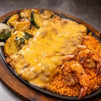
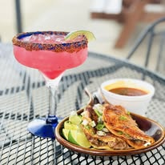
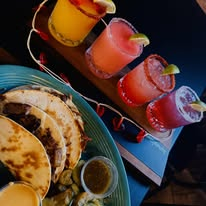
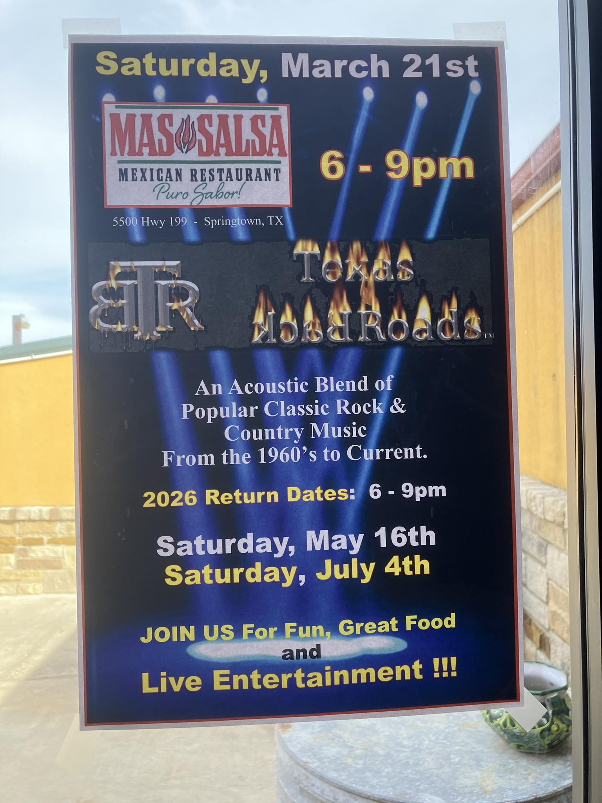
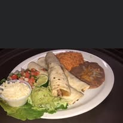
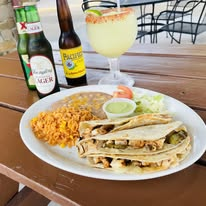
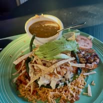
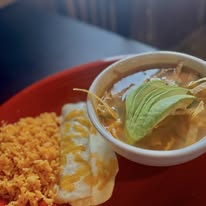
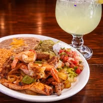

Order Ahead
Pickup-only demo flow with a working cart, pickup time selector, and fake confirmation screen.
Try the checkoutSpringtown Tex-Mex • pickup • live music
This demo is built to make Mas Salsa feel like a real, modern restaurant website right now—full menu, order-ahead flow, event page, and enough polish that an owner can click around and instantly get the vision.



Pickup-only demo flow with a working cart, pickup time selector, and fake confirmation screen.
Try the checkoutMas Salsa already has the right energy. The site should sell the music nights, not hide them.
See eventsBuilt around dine-in, outdoor seating, and in-store pickup—simple, honest, and believable.
Location & hoursFeatured picks
Live music matters
Mas Salsa is not just plates and margaritas. The events and music nights are part of the draw. This homepage pushes that instead of burying it in a random social feed.

Upcoming dates
Gallery




